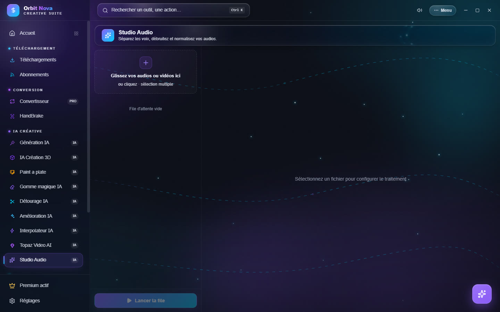
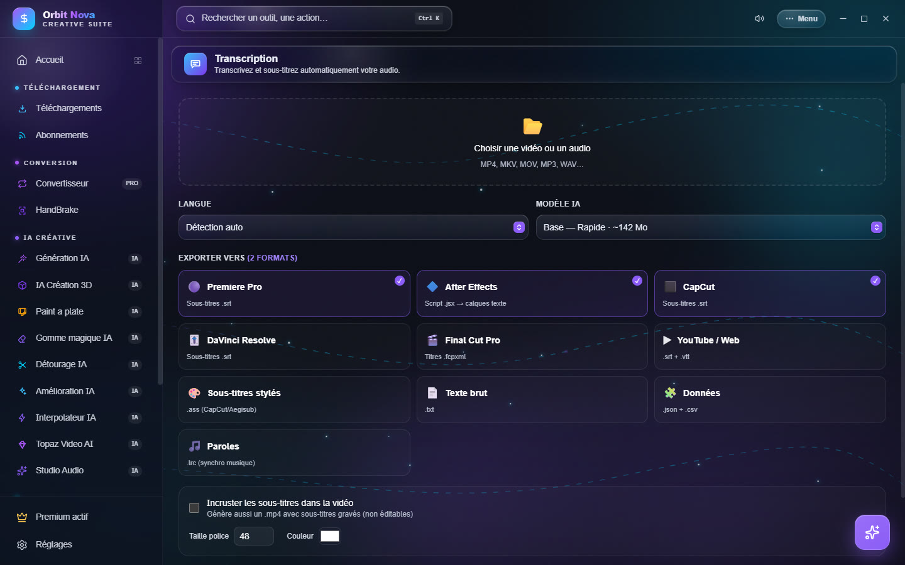

Audio et transcription
Studio Audio
Traite l'audio d'un fichier son ou d'une vidéo.


- Glissez vos audios ou vos vidéos dans la zone (plusieurs à la fois).
- Sélectionnez un fichier et choisissez le Traitement :
| Traitement | Ce qu'il fait |
|---|---|
| Séparation en stems | sépare la voix de la musique : 2 stems (voix + accompagnement), 4 stems (voix, batterie, basse, autres) ou, avec Demucs, 6 stems (+ guitare et piano). Premium. |
| Débruitage | réduit le souffle et les bruits de fond constants ; réglez l'intensité. |
| Normalisation | met le volume au niveau des plateformes de streaming (-14 LUFS, crête -1,5 dBTP). |
| Extraire l'audio | sort la piste son d'une vidéo, sans réencoder l'image, en WAV, MP3 ou FLAC. |
- Appliquer à toute la file si besoin, puis Lancer la file.
Pour la séparation, deux moteurs :
- Haute qualité (Demucs v4) : bien meilleur ; avec une carte NVIDIA, il utilise le GPU. Installation : Installer Demucs + PyTorch GPU (environ 2,5 Go) ou CPU (environ 700 Mo). Les stems sortent en MP3 320 kb/s. Rapide (environ 4 fois plus vite) ou Qualité max (modèle affiné).
- Rapide & léger (Spleeter) : qualité correcte, environ 700 Mo à installer.
Transcription
Transforme la parole d'une vidéo ou d'un audio en texte et en sous-titres, sur votre ordinateur. Fait partie d'Orbit Premium.


- Choisir une vidéo ou un audio (MP4, MKV, MOV, MP3, WAV…).
- Langue : Détection auto ou la langue parlée.
- Modèle IA : du plus rapide (Base, environ 142 Mo) au plus précis (plus lourd et plus lent).
- Exporter vers : cochez les formats voulus. Orbit prépare le bon fichier pour chaque logiciel : Premiere Pro, After Effects, CapCut, DaVinci Resolve, Final Cut Pro, YouTube / Web, Sous-titres stylés, Texte brut, Données et Paroles.
- Incruster les sous-titres dans la vidéo crée aussi un
.mp4avec les sous-titres gravés (non modifiables) ; réglez la taille de police et la couleur. - Dossier de sortie (par défaut à côté du fichier source), puis Transcrire & exporter.
Une fois fini, Ouvrir affiche les fichiers créés.